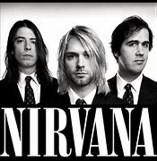
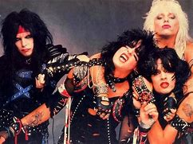
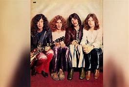

Nirvana

Banda de rock estadounidense formada hacia 1986 por Kurt Cobain y Krist Novoselic. A pesar de su corta existencia como grupo, y del suicidio de Cobain en 1994, su música cosechó un tremendo éxito en todo el mundo, hasta el punto de que Nirvana fue considerada una de las mejores bandas de rock de la época y la abanderada del movimiento Grunge. Kurt Cobain y Krist Novoselic pasaron parte de su adolescencia en la ciudad de Aberdeen (estado de Washington). Juntos habían tocado en algunas bandas de la zona de Washington, como The Sellouts, Skid Row o The Stiff WoodieslinckMÁS
Mötley Crüe

Mötley Crüe es una banda de rock estadounidense formada en Los Ángeles en 1981. La banda estuvo compuesta por Vince Neil (voz), Mick Mars (guitarra), Nikki Sixx (bajo) y Tommy Lee (batería). Durante su carrera, la banda vendió más de 100 millones de discos en todo el mundo y se convirtió en una de las bandas más icónicas del rock.Más
led zeppeling

Led Zeppelin fue un grupo británico de rock fundado en Londres en 1968 por el guitarrista Jimmy Page, quien había pertenecido a The Yardbirds. La banda estuvo integrada por Jimmy Page en la guitarra, John Paul Jones como bajista y tecladista, el vocalista Robert Plant y John Bonham en la batería (que había coincidido con Plant en The Band of Joy).MÁS